Manual de Usuario
Sistema de Gestión de Tienda
Garage Barki
Versión 1.0
Octubre 2025
Octubre 2025
El presente manual tiene como propósito orientar al personal de la tienda en el uso adecuado del sistema, facilitando su aprendizaje y permitiendo una navegación fluida por cada uno de los módulos administrativos. Aquí se explica de manera clara cómo funcionan las principales herramientas del sistema y cómo utilizarlas correctamente en las actividades diarias.
El panel principal muestra de forma general todas las métricas relevantes del sistema, tales como ventas, compras, procesos pendientes y diferentes gráficos de análisis. Desde esta sección también es posible generar e imprimir reportes con toda esta información para su uso administrativo.
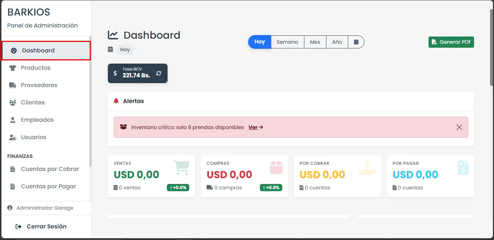El módulo de productos permite editar los detalles de cada prenda con toda la información necesaria, incluyendo fotografía, nombre, categoría y precios. Solo debe completar el formulario correspondiente, y el sistema asignará automáticamente los atributos requeridos para su correcto almacenamiento y gestión.
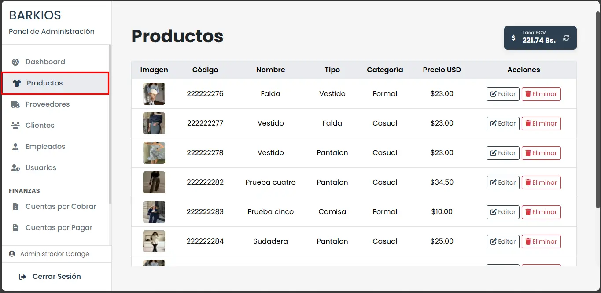En este módulo se gestionan los datos de las personas o empresas que suministran los productos vendidos en la tienda.
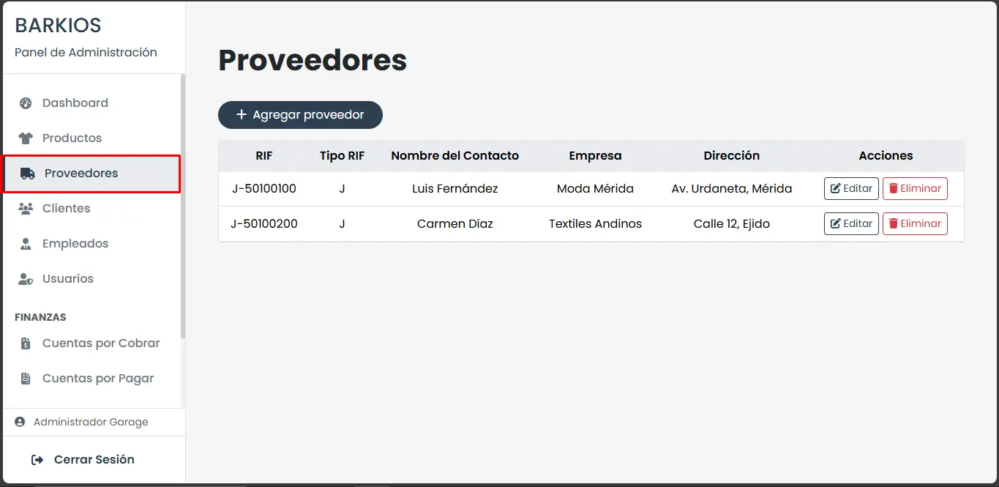Al registrar un proveedor, complete los campos clave por ejemplo: RIF, nombre comercial, persona de contacto y dirección para garantizar un registro completo que facilite futuras compras y conciliaciones.
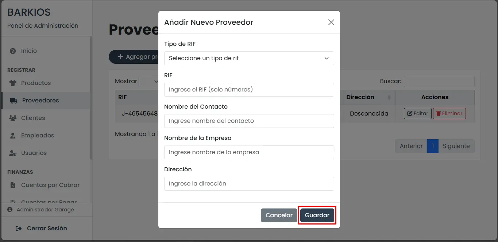En este apartado se almacena la información de los clientes, lo cual permite un mejor seguimiento de sus compras, preferencias y posibles beneficios relacionados con membresías. Para registrar un cliente se deben completar campos como cédula, nombre, dirección, número telefónico y tipo de membresía. Contar con estos datos ayuda al negocio a ofrecer un servicio más personalizado y planificar estrategias de promoción.

Al dar de alta un cliente, asegúrese de registrar correctamente la cédula, nombre, dirección y teléfono. El campo de tipo de membresía permite aplicar descuentos o beneficios según el perfil del cliente.
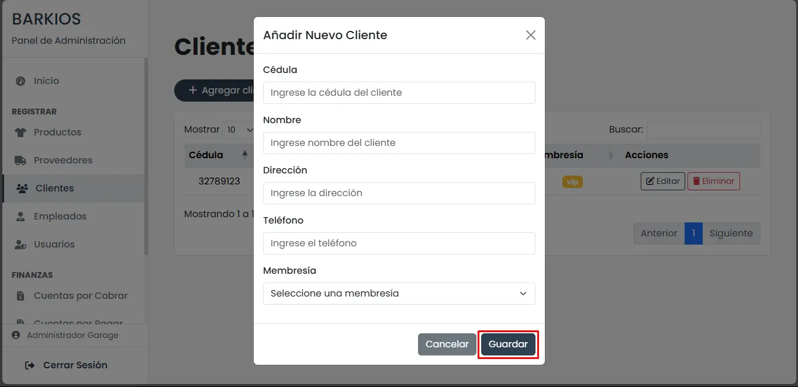Este módulo está destinado al registro y consulta del personal de la tienda. Permite mantener organizado el historial de cada empleado, incluyendo su nombre, cédula, teléfono y cargo. Disponer de esta información facilita la administración interna y el control del equipo de trabajo, especialmente en procesos como asignación de tareas o seguimiento de responsabilidades.
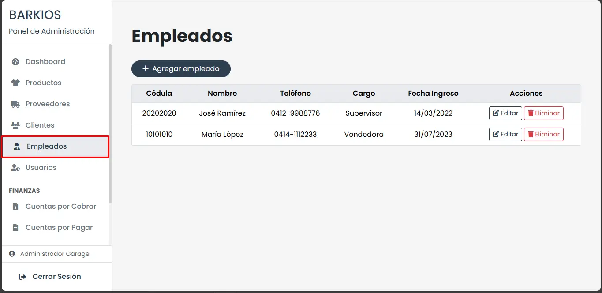Al registrar un empleado, capture datos básicos (cédula, nombre, teléfono) y el cargo asignado. Estos datos permiten controlar accesos, responsabilidades y asignar permisos dentro del sistema.
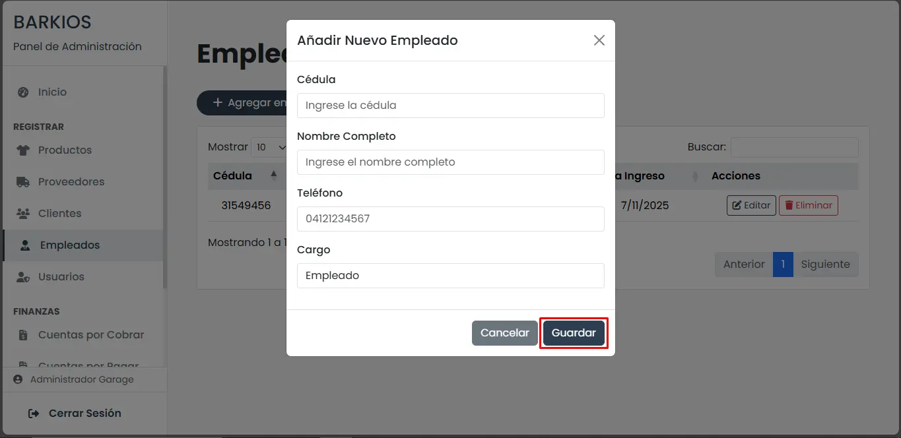Permite gestionar las cuentas de acceso al sistema. Cada usuario puede tener distintos permisos, dependiendo de las funciones que desempeñe dentro del negocio. Al registrar un nuevo usuario se deben ingresar datos como nombre, correo electrónico y contraseña. Una configuración adecuada de los permisos garantiza la seguridad y el uso correcto de la plataforma.
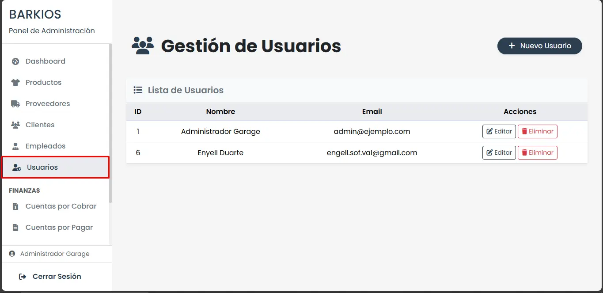Para crear un usuario, ingrese nombre, correo y contraseña; luego asigne el rol o permisos correspondientes. Revise periódicamente los accesos para mantener la seguridad del sistema.
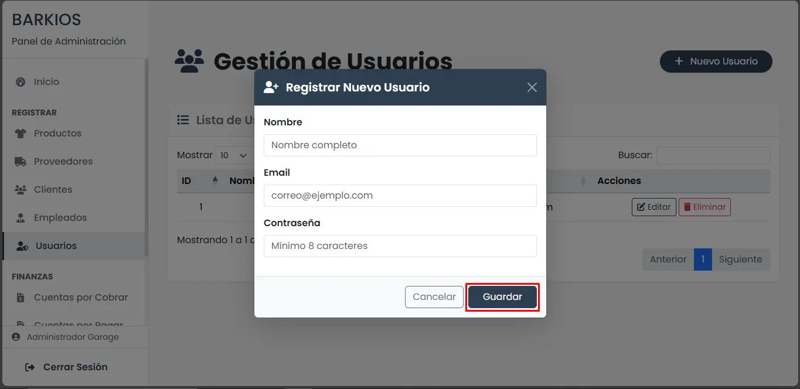En esta sección se visualiza el listado de clientes que mantienen créditos pendientes. El sistema permite revisar montos, fechas y estados de pago, facilitando el seguimiento y recuperación de los saldos. Esta información es fundamental para mantener un control financiero claro y evitar retrasos o deudas prolongadas.
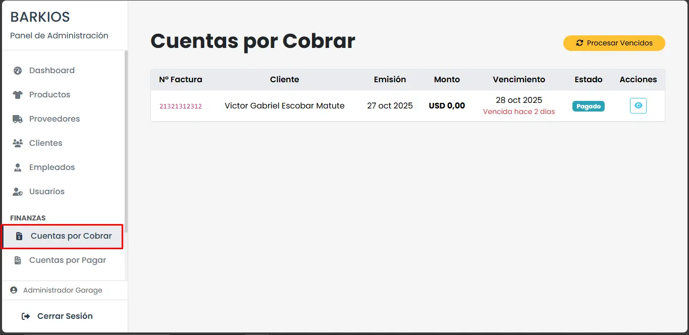Aquí se administran las obligaciones económicas de la tienda, como facturas emitidas por proveedores u otros acreedores. El módulo facilita la revisión de montos pendientes, fechas de vencimiento y pagos realizados. Mantener actualizado este apartado ayuda a planificar gastos, evitar moras y asegurar una relación comercial estable con los proveedores.
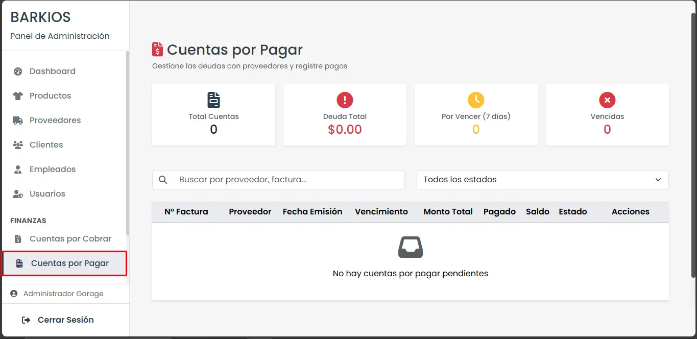Permite registrar y consultar todas las ventas realizadas. Durante el proceso se especifican los productos vendidos, el método de pago, el vendedor responsable y los datos del cliente. Para crear una venta se debe seleccionar el cliente, definir el tipo de venta e incluir los productos correspondientes. Este registro detallado facilita el control del flujo de ingresos y la revisión del historial de operaciones.
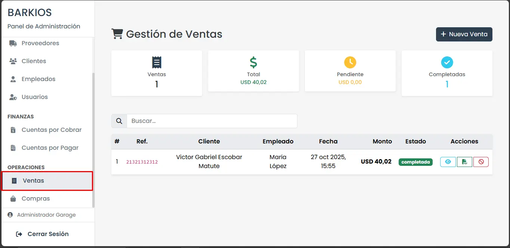Al registrar una venta, seleccione cliente y vendedor, especifique el tipo de venta y agregue los productos con sus cantidades y precios. Verifique el método de pago antes de finalizar la operación.
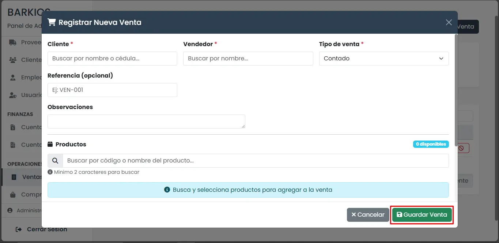En este módulo se documentan las adquisiciones realizadas a proveedores. El proceso de registro incluye datos como número de factura, fecha, proveedor, fecha de vencimiento, código del producto, nombre, categoría y precio de costo. Contar con esta información organizada permite evaluar gastos, controlar el inventario y mantener un historial transparente de las compras del negocio.
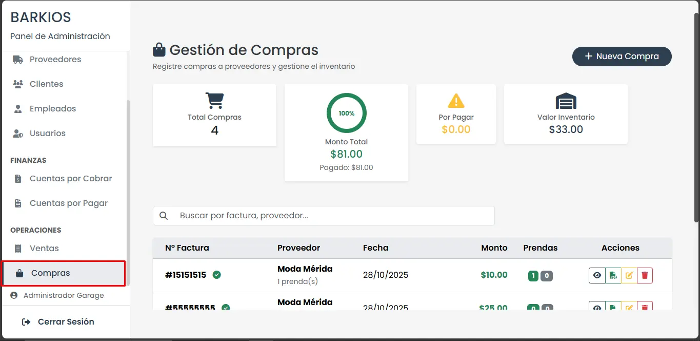Para registrar una compra, ingrese el número de factura, la fecha, el proveedor y la fecha de vencimiento; luego agregue cada producto con su código, nombre, categoría y precio de costo. Esto permite conciliar inventario y contabilidad de forma ordenada.
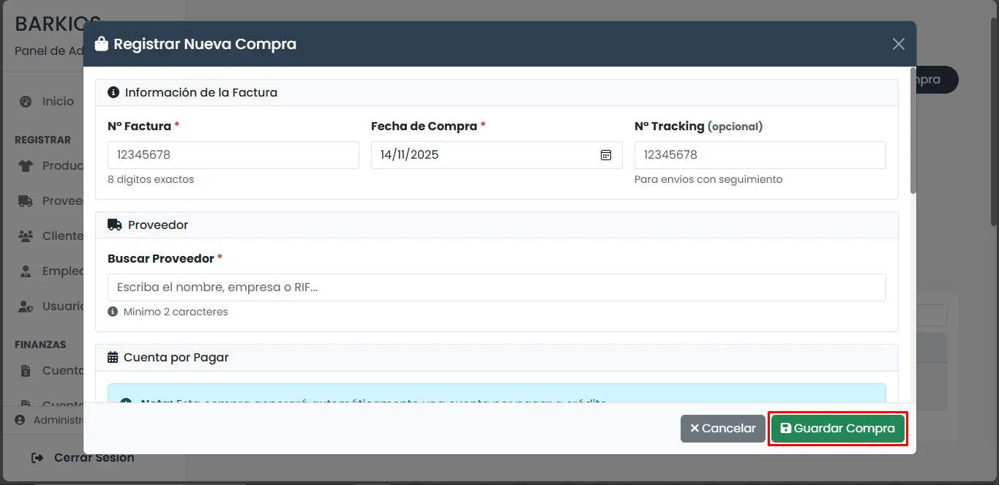